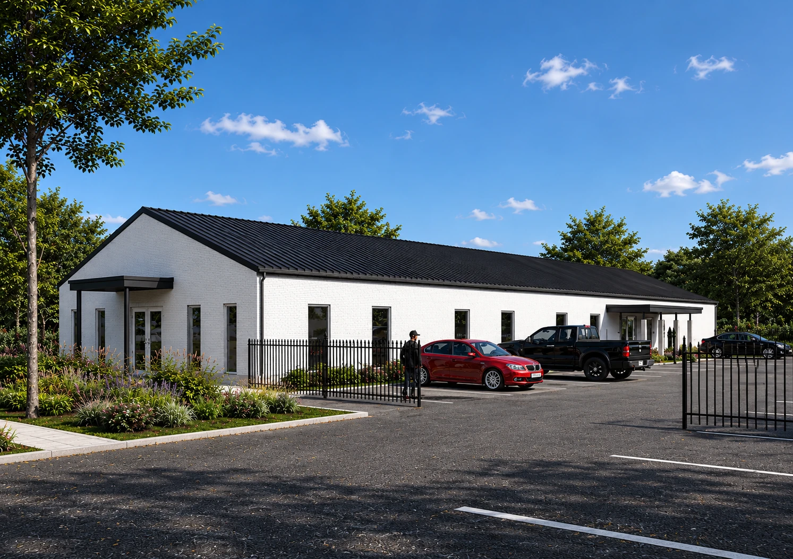
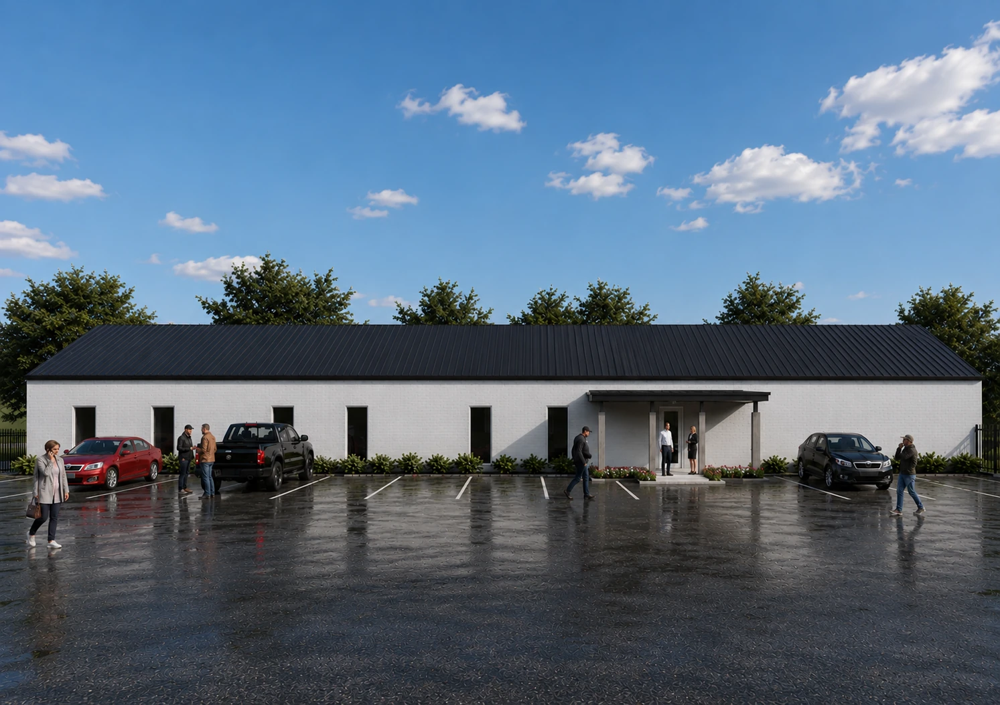
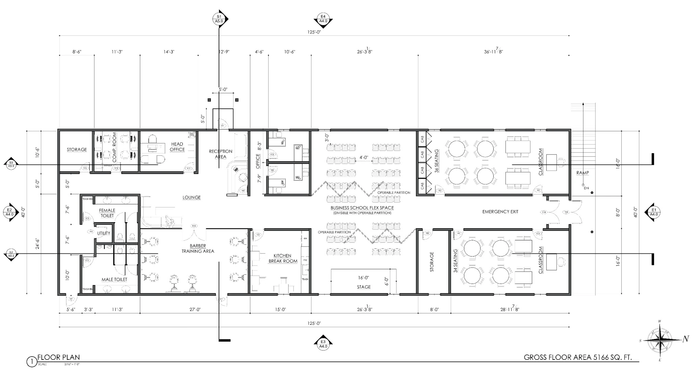

PROJECT · COMMERCIAL · TEXAS, USA
Learning & Training Facility
A single-storey learning and training facility planned to support vocational education, practical instruction, and collaborative use. The 5,166 sq. ft. layout includes reception and office areas, a lounge, barber training area, flexible business-school space with operable partitions, classrooms, a kitchen and break room, and support spaces.
EXTERIOR PERSPECTIVES


FLOOR PLANS & DRAWINGS

INTERIOR PERSPECTIVES
The seven interior perspectives were shared in the conversation, but their original image files were not available in the current website package. They can be added to this gallery once supplied together as image files.